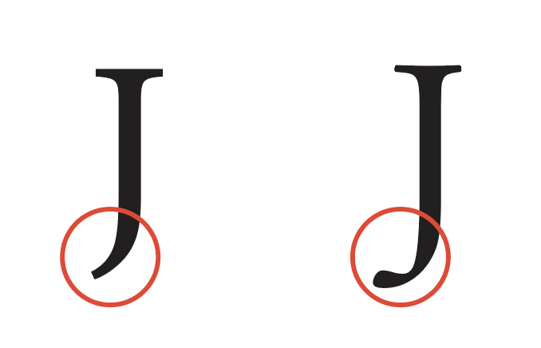
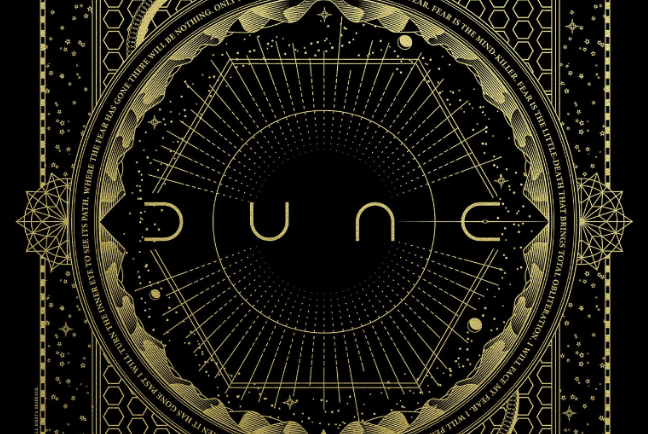

Adobe Garamond is a popular typeface that is widely used in print and digital media. Designed by Robert Slimbach in 1989, it is a revival of the classic Garamond typeface that was created in the 16th century by French engraver Claude Garamond. The purpose of Adobe Garamond was to create a modern digital interpretation of the classic Garamond typeface that would work well for desktop publishing and digital printing. The Adobe Garamond typeface is known for its elegant and sophisticated look, with its carefully crafted serifs and subtle variations in stroke weight. It is a versatile typeface that works well for both body text and headings, and it is particularly well-suited for printed materials such as books, magazines, and brochures. Adobe Garamond is available in a range of weights and styles, from light and italic to bold and condensed, making it a flexible choice for designers and typographers. In addition to its use in print media, Adobe Garamond has also been used extensively in digital media, including websites, apps, and other digital publications. Overall, the Adobe Garamond typeface is a timeless classic that has stood the test of time and remains a popular choice for designers and publishers today.
Minion Pro
Minion is a classic serif typeface designed by Robert Slimbach in the 1990s and published by Adobe. The design is based on old-style serif typefaces, such as those created by Claude Garamond and other 16th-century French type designers. The purpose of the Minion typeface was to create a modern digital interpretation of these classic serif typefaces of the Renaissance. The Minion typeface is characterized by its clean lines, elegant proportions, and high legibility, making it a versatile typeface that can be used for a wide range of design applications. It is particularly well-suited for use in long blocks of text like books, magazines, and newspapers, as well as for digital media like websites and apps. The typeface features a range of subtle details, such as slightly curved serifs and a moderate stroke contrast, which give it a refined and elegant look. Minion is a versatile typeface that works well for both text and display use, and it is commonly used in books, magazines, and other printed materials. It is available in a range of weights and styles, including regular, bold, italic, and small caps, making it a flexible choice for designers and typographers. Minion has won several awards and it is widely considered one of the best modern interpretations of the classic serif typeface.
Comparison
Similarities
Image of the B of Adobe Garamond and of Minion Pro, side by side. Both have similar x heights, bowl sizes, serifs, and thicknesses.Image of the L of Adobe Garamond and of Minion Pro, side by side. Both have similar sized stems in comparison to their bottom legs.Image of the M of Adobe Garamond and of Minion Pro, side by side. The lowercase m for both have similar curves, serifs, crotches, and arcs.Image of the X of Adobe Garamond and of Minion Pro, side by side. Both have similar contrast of and thickness of their legs. Serifs are also similar.Image of the exclamation point of Adobe Garamond and of Minion Pro, side by side. Both are exactly the same with the point and top stem.
Differences
Image of the K of Adobe Garamond and of Minion Pro, side by side. The serif on the bottom right of Adobe Garamond is not on both sides but on Minion, it is.

Image of the J of Adobe Garamond and of Minion Pro, side by side. The tail at the end of the J of Adobe Garamond is shorter than Minion.Image of the W of Adobe Garamond and of Minion Pro, side by side. The Adobe Garamond's W have 2 terminals and Minion has 4. Image of the 9 of Adobe Garamond and of Minion Pro, side by side. The serif on the bottom right of Adobe Garamond is not on both sides but on Minion, it is. Image of the 6 of Adobe Garamond and of Minion Pro, side by side. For Adobe Garamond, the bowl of the 6 meets the vertical but leaves a gap for Minion.
Image of the a of Adobe Garamond and of Minion Pro, side by side. Lowercase a has a sharp spur upwards at top left. The a has a curved tail. It has a smaller bowl. Image of the a of Minion Pro and Adobe Garamond, side by side. The x height of Minion is taller than that of Adobe Garamond.
Examples and visual references
_____
This font can be found in books such as Dr. Seuss, Harry Potter, and Hunger Games series. The font was used for Google’s original logo, Abercombie & Fitch logo, and Apple’s Think Different Campaign.Adobe Garamond is used for signage because of its legibility.
_____

This font can be found in the movie poster for Dune. Several universities use Minion as their primary typeface in title and body text, including Wake Forest, Brown, Purdue and Trinity College Dublin. It is suitable for a wide range of projects, from formal documents to more creative endeavors. It is a great choice for printed materials, websites, and logos, and works well for both large and small sizes.It is a humanist design, with a strong calligraphic influence, and is known for its robust, yet graceful forms.